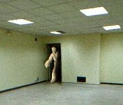
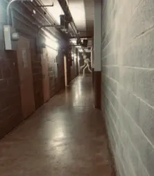

窃皮者，是一种体型巨大的类人型实体，它们通常穿着受害者的皮肤以伪装自己，这使得他们很难被发现。
人们认为窃皮者具有模仿人类语言的能力，只是模仿得非常不像，因此强烈建议远离那些似乎在重复同样的词语或用单调的声音说话的“流浪者”。
有流传多年的流言说，人们可以通过血液的颜色来识别窃皮者——人类拥有红色的血液，而窃皮者的血液是澄澈透明的。
这一传言曾被一个匿名的团体证明，尽管是正确的，但我们仍建议通过其它方式分辨窃皮者而非采取这种方式，即避免采用任何暴露血液的方法，例如，刺伤、射击等，因为这可能惹怒实体而导致流浪者被实体攻击致使死亡。

曾经，我们认为分辨出窃皮者和人类是不可能的；但据调查研究，我们已经发现多种确定实体的方法。
方法包括：观察对方耳部是否流血、对方开口是否语无伦，发音是否次口齿不清、对方是否行走缓慢，是否不停地拉扯表层皮肤。
窃皮者是后室中最常见的实体之一，它们在许多楼层都有分部。值得一提的是，不同于其它楼层的窃皮者， Level 2内的窃皮者更加活跃，该楼层的窃皮者会像攻击人类般攻击笑魇和血色狂欢，而且攻击通常都能得手。
我们尚不能知晓窃皮者攻击其它实体的原因，我们推测这源于窃皮者的进化历程。我们认为窃皮者可能是后室中的远古人类，为了生存，不得不进化为当今的窃皮者。

一张拍摄于Level 3的图片，图中的窃皮者可能正处于饥饿状态。
窃皮者不会杀死受害者，然而受害者在被取下大量的皮肤后，往往会机体因失血过多而休克；但如果及时就医，受害者仍有幸存的可能。
大多数受害者都失去了一只眼睛，以及脸上大面积的皮肤。我们不知道窃皮者这么做的目的，可能是无意，也可能是故意。
窃皮者会通过模仿人类的语言来引诱猎物，但它们吐字不清，通常只是嘟囔杂七杂八的、支离破碎的简单词语。
未记录
未记录
在M.E.G. 建立之前，后室中就已流传着大量关于窃皮者的目击报告。
窃皮者是后室中数量最多的实体，它们通常是流浪者最先遇到的实体之一。
近期，我们偶遇了一名幸存于窃皮者攻击的男子，详情请见下方附件。